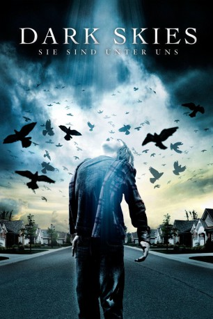

#6603 Dark Skies - Sie sind unter uns
Alternativ: Dark Skies
 
 IMDB-Wertung: 6.3 / 10
IMDB-Wertung: 6.3 / 10  Metascore: 0
Metascore: 0 
Bei den Barretts läuft gegenwärtig alles schief. Vater Daniel hat seinen Job verloren und steckt tief in den Schulden. Ehefrau Lacy ist dementsprechend ziemlich überarbeitet, nicht nur muss sie sich um ihren Nachwuchs kümmern, sondern auch dafür sorgen, dass noch Geld in die Familienkasse fließt. Obwohl die beiden Brüder Sam und Jesse ziemlich unterschiedlich sind, halten sie ob der Familienprobleme zusammen. Als Lacy, geweckt durch einen stechenden Ton, eines nachts feststellt, dass sich jemand am Kühlschrank bedient hat, ist das erst der Auftakt zu einer ganzen Reihe von unerklärlichen Ereignissen. Die Familie muss bald einsehen, dass sie es mit einer tödlichen Macht zu tun hat. Da ihnen niemand glaubt, nehmen Daniel und Lacy die Dinge selbst in die Hand...
Jahr: 2013
Dauer: 96 Minuten
FSK: 16
Land: USA Studio: Dimension FilmsTonspuren: DTS - ,
Untertitel: Deutsch,
Auflösung: 1080p (1920x800) Größe: 4085 MB
Genre: Thriller, Horror, Sci-Fi
Regisseur: Scott Stewart
Drehbuch: Scott Stewart
Soundtrack:
Darsteller:
 Keri Russell als Lacy Barrett
Keri Russell als Lacy Barrett Josh Hamilton als Daniel Barrett
Josh Hamilton als Daniel Barrett Dakota Goyo als Jesse Barrett
Dakota Goyo als Jesse Barrett- Kadan Rockett als Sam Barrett
 J.K. Simmons als Edwin Pollard
J.K. Simmons als Edwin Pollard- L.J. Benet als Kevin Ratner
- Myndy Crist als Karen Jessop
- Annie Thurman als Shelly Jessop
- Jake Brennan als Bobby Jessop
 Ron Ostrow als Richard Klein
Ron Ostrow als Richard Klein- Tom Costello als Young Father
- Marion Kerr als Young Mother
- Alyvia Alyn Lind als Young Daughter
 Josh Stamberg als Police Officer
Josh Stamberg als Police Officer- Tiffany Jeneen als Protection One Operator
 Brian Stepanek als Security System Technician
Brian Stepanek als Security System Technician- Judith Moreland als Janice Rhodes
- Jessica Borden als Young Wife
- Kenneth Meseroll als Pete
 Trevor St. John als Alex Holcombe
Trevor St. John als Alex Holcombe Andy Umberger als Doctor Jonathan Kooper
Andy Umberger als Doctor Jonathan Kooper Michael Patrick McGill als Ratner's Father
Michael Patrick McGill als Ratner's Father Josh Wingate als Gun Salesman
Josh Wingate als Gun Salesman- Alexandra Anthony als Naughty Cheerleader
- Salem the Cat als Edwin's Cat , uncredited
- Elizabeth Kouri als Nosey Neighbor , uncredited
- Rich Hutchman als Mike Jessop
- Adam Schneider als Young Husband
- Scott Anthony als Naughty Teacher
- Dexter the Cat als Edwin's Cat , uncredited
- Roscoe the Cat als Edwin's Cat , uncredited
Datei: X:\2013(A-F)\Dark Skies - Sie sind unter uns (2013, FSK16, 1920x800).mkv seit 24.07.2017
Festplatte: HD 2012(N-Z)-2013(A-H)
 Es gibt insgesamt 127 Filme in der Gruppe '2013(A-F)'
Es gibt insgesamt 127 Filme in der Gruppe '2013(A-F)'